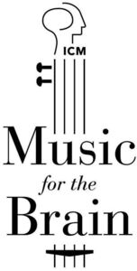

Trade Mark Journal No.2026/012 20 March 2026
WO0000001905604 (16,36,41,42)
Office of origin: European Union Intellectual Property Office (EUIPO)
Date of International Registration:21 January 2026
Date of designation in the UK:
21 January 2026

International priority date claimed: 25 July 2025
(European Union Intellectual Property Office (EUIPO))
(019223646)
- Class 16
- Paper, cardboard; printed matter; bookbinding material; photographs; stationery; instructional or teaching material (except apparatus); posters; albums; almanacs; pamphlets; newsletters; books; booklets; journals; handbooks [manuals]; periodicals; printing blocks; prospectuses; publications; graphic representations; graphic reproductions; paper bags and sachets; stationery.
- Class 36
- Financial patronage operations particularly for financing programs in the medical and research field; fund raising; organization of charitable fundraising events including concerts.
- Class 41
- Organization and conducting of shows, concerts and conferences; presentation of musical performances; presentation of performances by artists; music programming services; orchestra services; booking of seats for shows; cultural and educational activities; publishing services including electronic publishing; publishing of musical compositions, musical arrangements and musical texts; training services; training in the field of neurology; therapeutic education; organization and conducting of training workshops, colloquiums, seminars, conferences, symposiums, congresses; organization of exhibitions for cultural or educational purposes; entertainment; organization of contests; production of films other than advertising films; drafting and publication of texts other than for advertising; desktop publishing.
- Class 42
- Scientific and technological research services provided by engineers; advisory services relating to research and development in the field of therapeutics; medical and pharmacological research services; pharmaceutical research and development services; medical laboratory services (medical research); academic research conducted by academics in the scientific, technological, biological and medical fields.
Institut du Cerveau et de la Moelle épinière
Representative: DEPREZ, GUIGNOT & ASSOCIES (DDG), 21 rue Clément Marot, F-75008 Paris, FRANCE